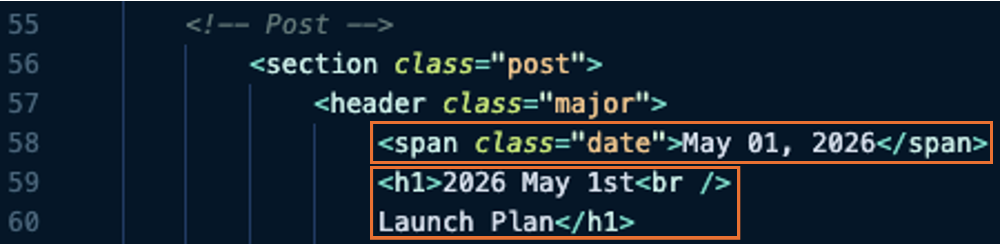

February 26, 2026
Adding New Update Pages
This page will detail how and where to access the HTML code to add a new FOXSI-5 launch plan update page.
- This page will not describe the Git/Github best practices or workflow in detail.
-
We assume the contributer already knows to fork the main Github repository, make changes to a new branch of their fork, then finally propose the changes in a Pull Request from your new (not main) to the FOXSI main branch for review.
Step 1: Create the new HTML update page
Let's start in the foxsi5_launch_days/ folder in the top level of the repository (a).
Let's use the temporary update page dated 2026 May 1st as a template and use it to create an update for the following day, May 2nd (b).
We now have a new HTML file to edit and add in the information we want to share with the world regarding FOXSI-5 launch-day plans.
Step 2: Update the page with information
The format for the update is may be different each time or might change but this is the point we should add create the new page with the information we want to share.
On that, there are going to be some "template" lines we'll need to update so we'll have to edit the new HTML file we created.
- Remember to update the dates in the template.
-
Since we're using the foxsi5_20260501.html file as a template, we'll want to update the references to May 1st, 2026. This occurs in two places in the new file in the section defining the heading of the page.

- Adding images and files.
-
Any images or material can be placed in and linked to the following folder.
Images can be linked and displayed directly in the browser and files can be linked for browser viewing or download. Examples of these are:
- Image:
<img src="foxsi5_updates/image_name.png" alt="" />
- Document:
<a class="button" href="foxsi5_updates/file_name.png" target="_blank">Text</a>
Step 3: Update the linked buttons on all pages
Now we have a new page, it's time to make sure it's linked to the rest of the website.
To do this, we just add a new button to the top of all the relevant HTML pages for FOXSI-5. The files are all those in the foxsi5_launch_days/ folder (except this instructions page) and the foxsi5_main.html page
The code that needs updated shows up in multple places (annoyingly); however, it can mostly be copied & pasted.
- Note
- The
../ for the paths in the foxsi5_main.html file.
- The latest update page goes to the top of the "FOXSI-5 Launch Updates" list.